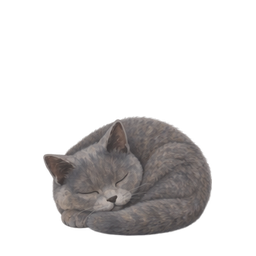

<!doctype html>
<html lang="zh-CN"><meta charset="utf-8"><meta name="viewport" content="width=device-width, initial-scale=1">
<title>陈皮 · B 基础动作 24 帧</title>
<style>
*{box-sizing:border-box}body{margin:0;padding:28px;background:#edece5;color:#35453f;font-family:'Microsoft YaHei UI',sans-serif}main{max-width:1060px;margin:auto}h1{font-size:25px;margin:8px 0}p{color:#788175;font-size:13px;line-height:1.8}.topline{font-size:10px;letter-spacing:.2em}.layout{display:grid;grid-template-columns:1.5fr 1fr;gap:16px}.card{border-radius:22px;background:#fbfaf4;overflow:hidden}.stage{height:350px;display:flex;align-items:center;justify-content:center;position:relative}.dark{background:#252c35}.stage img{width:256px;height:256px;object-fit:contain;z-index:2}.caption{padding:15px 20px;font-size:12px;border-top:1px solid #dedfd5}.controls{display:flex;flex-wrap:wrap;gap:10px;padding:16px;background:#fbfaf4;border-radius:18px;margin:16px 0;align-items:center}button,select{padding:9px 12px;border:1px solid #cbd2c3;background:#f4f5ee;border-radius:9px;font:inherit;font-size:12px;color:#425948;cursor:pointer}button.active{background:#d7e4d2}input{accent-color:#6f8966;flex:1}output{font-size:12px}.clips{display:grid;grid-template-columns:repeat(3,1fr);gap:12px}.mini{background:#fbfaf4;border-radius:16px;padding:12px;text-align:center}.mini img{width:160px;height:160px;max-width:100%}.mini span{display:block;font-size:12px;margin:5px}.nest{position:absolute;width:178px;height:110px;bottom:65px;border-radius:40px;background:#bc9174;border:2px solid #8d674d;z-index:1}.nest:before{content:'';position:absolute;inset:13px 10px 19px;border-radius:50%;background:#f1dec3}.lip{position:absolute;width:178px;height:25px;bottom:65px;background:#c49776;border-radius:10px;z-index:3}.bed-demo img{transform:translateY(14px)}a{color:#597454}#status{min-height:24px}@media(max-width:750px){body{padding:16px}.layout{grid-template-columns:1fr}.clips{grid-template-columns:repeat(2,1fr)}.stage{height:300px}.nest,.lip{bottom:40px}}
.bed-demo img{position:absolute;left:50%;top:calc(50% - 143px);transform:translateX(-50%)}
</style>
<main><div class="topline">CHENPI / FOUNDATION MOTION</div><h1>B · 24 帧基础动作</h1><p>待机、移动、睡眠三组，包含三个衔接动作。每段 24 帧，播放速度按动作独立设置。</p>
<div class="layout"><div class="card"><div class="stage" id="mainStage"></div><div class="caption" id="clipName">加载中</div></div><div class="card"><div class="stage dark bed-demo"><div class="nest"></div><div class="lip"></div></div><div class="caption">睡觉帧共用 · 猫窝独立遮挡示意</div></div></div>
<div class="controls"><select id="clip" aria-label="选择动作"></select><button id="play">暂停</button><button id="chain">完整动作衔接</button><button id="mirror">向左</button><button id="background">深色背景</button><select id="speed" aria-label="播放速度"><option value=".5">半速</option><option value="1" selected>正常</option></select><input id="scrub" aria-label="逐帧查看" type="range" min="0" max="23" value="0"><output id="frame">1 / 24</output></div>
<p id="status">预载所有动作帧…</p><div class="clips" id="gallery"></div><p><a href="README.md">资源与验证记录</a> · <a href="references/approved-cat.png">本次认可的造型依据</a></p></main>
<script>
const labels={'idle':'发呆眨眼','walk':'移动','move-to-sit':'移动到坐下','sit-to-idle':'坐下到发呆','sit-to-sleep':'坐下到睡觉','sleep':'睡觉'};
const order=['walk','move-to-sit','sit-to-idle','idle','sit-to-sleep','sleep'];
const selector=document.querySelector('#clip'),cat=document.querySelector('#cat'),scrub=document.querySelector('#scrub'),play=document.querySelector('#play');
let definitions={},paths={},selected='idle',elapsed=0,previous=performance.now(),playing=true,chaining=false,phase=0,index=-1;
function show(i){index=i;cat.src=paths[selected][i];scrub.value=i;document.querySelector('#frame').value=`${i+1} / 24`;document.body.dataset.clip=selected;document.body.dataset.frame=i;}
function choose(name){selected=name;selector.value=name;elapsed=0;index=-1;document.querySelector('#clipName').textContent=`${labels[name]} · 24 帧 · ${definitions[name].fps} FPS`;show(0);}
function paused(){playing=false;play.textContent='播放';}
selector.onchange=()=>{chaining=false;choose(selector.value);};play.onclick=()=>{playing=!playing;play.textContent=playing?'暂停':'播放';};
scrub.oninput=()=>{paused();chaining=false;elapsed=Number(scrub.value)/definitions[selected].fps;show(Number(scrub.value));};
document.querySelector('#chain').onclick=()=>{chaining=true;phase=0;choose(order[0]);playing=true;play.textContent='暂停';};
document.querySelector('#mirror').onclick=e=>{const left=cat.style.transform!=='';cat.style.transform=left?'':'scaleX(-1)';e.target.textContent=left?'向左':'向右';};
document.querySelector('#background').onclick=()=>document.querySelector('#mainStage').classList.toggle('dark');
function tick(now){if(playing){elapsed+=Math.min(.15,(now-previous)/1000)*Number(document.querySelector('#speed').value);let length=24/definitions[selected].fps;if(elapsed>=length){if(chaining){phase=(phase+1)%order.length;choose(order[phase]);}else if(definitions[selected].loop)elapsed%=length;else{elapsed=(23)/definitions[selected].fps;paused();}}const next=Math.min(23,Math.floor(elapsed*definitions[selected].fps));if(next!==index)show(next);}previous=now;requestAnimationFrame(tick);}
fetch('clips.json').then(r=>r.json()).then(async data=>{definitions=data.clips;for(const name of Object.keys(labels)){selector.add(new Option(labels[name],name));paths[name]=Array.from({length:24},(_,i)=>`/assets/pets/bluecat/b-foundation/${name}/${String(i).padStart(2,'0')}.png`);const card=document.createElement('div');card.className='mini';const picture=document.createElement('img');picture.src=`preview/${name}/animation.webp`;picture.alt=labels[name];const caption=document.createElement('span');caption.textContent=labels[name];card.append(picture,caption);card.onclick=()=>{chaining=false;choose(name);playing=true;play.textContent='暂停';};document.querySelector('#gallery').append(card);}await Promise.all(Object.values(paths).flat().map(src=>new Promise((resolve,reject)=>{const image=new Image;image.onload=resolve;image.onerror=reject;image.src=src;})));choose('idle');document.querySelector('#status').textContent='144 帧已载入。单独查看过渡动作时播放一次后停住；“完整动作衔接”依次播放六段。';previous=performance.now();requestAnimationFrame(tick);}).catch(()=>{document.querySelector('#status').textContent='动作资源尚未齐全，或服务根目录未设为项目目录。';paused();});
</script></html>
